library(MASS) # nolint: unused_import_linter. Used for "rlm".
library(ggplot2)
library(dplyr)
library(jbplot)
library(ggthemes)
knitr::opts_chunk$set(
comment = "#>",
fig.align = "center"
)ggplot2 (Grammar)
exercises
ggplot2
Workbook for completing quizzes and exercises from the “Grammar” chapters of ggplot2: Elegant Graphics for Data Analysis, third edition, with comparisons to solutions from Solutions to ggplot2: Elegant Graphics for Data Analysis.
Introduction
This workbook includes answers and solutions to the quizzes and exercises from ggplot2: Elegant Graphics for Data Analysis and Solutions to ggplot2: Elegant Graphics for Data Analysis, organized by chapter. It includes excerpts from both books, copied here.
WARNING, SPOILERS! If you haven’t read the ggplot2 book and intend to complete the quizzes and exercises, don’t read this notebook. It contains my (potentially wrong) answers to both.
13 Mastering the grammar
In order to unlock the full power of ggplot2, you’ll need to master the underlying grammar. By understanding the grammar, and how its components fit together, you can create a wider range of visualizations, combine multiple sources of data, and customise to your heart’s content.
This chapter describes the theoretical basis of ggplot2: the layered grammar of graphics. The layered grammar is based on Wilkinson’s grammar of graphics, but adds a number of enhancements that help it to be more expressive and fit seamlessly into the R environment. The differences between the layered grammar and Wilkinson’s grammar are described fully in Hadley Wickham. In this chapter you will learn a little bit about each component of the grammar and how they all fit together. The next chapters discuss the components in more detail, and provide more examples of how you can use them in practice.
The grammar makes it easier for you to iteratively update a plot, changing a single feature at a time. The grammar is also useful because it suggests the high-level aspects of a plot that can be changed, giving you a framework to think about graphics, and hopefully shortening the distance from mind to paper. It also encourages the use of graphics customised to a particular problem, rather than relying on specific chart types.
13.5 Exercises
- One of the best ways to get a handle on how the grammar works is to apply it to the analysis of existing graphics. For each of the graphics listed below, write down the components of the graphic. Don’t worry if you don’t know what the corresponding functions in ggplot2 are called (or if they even exist!), instead focussing on recording the key elements of a plot so you could communicate it to someone else.
Answer: use the components from 13.4 to describe each plot: data, aesthetics (aes), stat, geom, scale, coordinate system (coord), and faceting
- “Napoleon’s march” by Charles John Minard: link
Answer: the plot describes Napolean’s 1812 campaign. Larger version at: Wikipedia
{kind=link}
- data: the size, location and date of the army’s travel, along with temperature
- aes: x, y mapped to location over time, with width representing size
- stat: no transformation
- geom: line
- scale: scales are used for location and temperature
- coord: Cartesian / map projection
- facet: no faceting
- “Where the Heat and the Thunder Hit Their Shots”, by Jeremy White, Joe Ward, and Matthew Ericson at The New York Times. link
Answer: a plot of basketball shots and points scored.
- data: number of attempts and points scored by location
- aes: x, y mapped to location, size mapped to attempts, color to points scored
- stat: no transformation (possibly points per attempt)
- geom: hex tiles
- scale: continuous scales mapped to location, size (attempts), and color (points)
- coord: Cartesian, mapped to the court
- facet: faceting by team and players
- “London Cycle Hire Journeys”, by James Cheshire. link
Answer: retrieved from archive.org.
{kind=link}
- data: travels of London bicycle rentals
- aes: x, y mapped to location, density (alpha) mapped to number of trips in a location
- stat: none
- geom: line
- scale: location
- coord: Cartesian / map projection
- facet: none
- The Pew Research Center’s favorite data visualizations of 2014: link
Answer: multiple plots, described individually.
Political Shifts
- data: responses to political values questions
- aes: height showing volume of responses, between consistently liberal and conservative
- stat: histogram
- geom: area / frequency polygon, with color showing above / below median of the other party
- scale: continuous
- coord: Cartesian
- facet: faceting by party by year
Next America
- data: population by age group and gender
- aes: binned data by age and gender
- stat: none
- geom: bar and color by gender, with boomers a distinct color
- scale: continuous
- coord: Cartesian
- facet: faceting by year, animated
“Murder Capitals”
- data: murder rate for six cities, with the highest rate shown for each year, national rate
- aes: x is time (year) and y is the murder rate
- stat: none
- geom: bar, line
- scale: city is additionally mapped to year at the top of the plot, and national rate is shown as a line across the bottom
- coord: Cartesian
- facet: none
Ideological Placement of News Sources
- data: scores of responses to political values questions mapped to audiences for news sources
- aes: x mapped to score for a news source audience
- stat: none
- geom: point
- scale: a single (x-axis) continuous scale, with labels for each source
- coord: Cartesian
- facet: none
Regional Support for Same-Sex Marriage
- data: percentage of population supporting same-sex marriage by region
- aes: x mapped to time (year), y mapped to percent support
- stat: none
- geom: line
- scale: continuous
- coord: Cartesian
- facet: faceting by region, national support is an additional layer
- “The Tony’s Have Never Been so Dominated by Women”, by Joanna Kao at FiveThirtyEight: link.
Answer: a plot of Tony award winners by category.
- data: Tony award categories by year with at least one female winner
- aes: categories along the y axis, years along the x axis, colored red if a female won
- stat: none
- geom: square points with color showing female winners
- scale: discrete categories and years
- coord: Cartesian
- facet: none
- “In Climbing Income Ladder, Location Matters” by the Mike Bostock, Shan Carter, Amanda Cox, Matthew Ericson, Josh Keller, Alicia Parlapiano, Kevin Quealy and Josh Williams at the New York Times: link
Answer: not visible due to paywall, unable to retrieve the graphic.
- “Dissecting a Trailer: The Parts of the Film That Make the Cut”, by Shan Carter, Amanda Cox, and Mike Bostock at the New York Times: link
Answer: multiple plots showing the sequencing of movie trailers.
- data: scenes in a trailer mapped to when they occurred in the full film
- aes: x axis showing the timestamp of a trailer scene, y axis and color showing when the scene occurred, including scenes not in the final film
- stat: none
- geom: square points (with width per scene), connected by lines
- scale: continuous duration (seconds)
- coord: Cartesian
- facet: faceting by trailer (all plots are mapped to the same scale)
14 Build a plot layer by layer
One of the key ideas behind ggplot2 is that it allows you to easily iterate, building up a complex plot a layer at a time. Each layer can come from a different dataset and have a different aesthetic mapping, making it possible to create sophisticated plots that display data from multiple sources.
You’ve already created layers with functions like geom_point() and geom_histogram(). In this chapter, you’ll dive into the details of a layer, and how you can control all five components: data, the aesthetic mappings, the geom, stat, and position adjustments. The goal here is to give you the tools to build sophisticated plots tailored to the problem at hand.
14.3.1 Exercises
- The first two arguments to ggplot are
dataandmapping. The first two arguments to all layer functions aremappinganddata. Why does the order of the arguments differ? (Hint: think about what you set most commonly.)
Answer: most plots use common data for all layers, where the aesthetics are more likely to vary.
GG Solutions:
- Commonly, you first set the data in
ggplot()and then set aesthetics inside your layer functions, likegeom_point(),geom_boxplot(), orgeom_histogram().
- The following code uses dplyr to generate some summary statistics about each class of car.
class <- mpg %>%
group_by(class) %>%
summarise(n = n(), hwy = mean(hwy))Use the data to recreate this plot:Answer: with some help from the source code to get the measurements right, here is the solution:
ggplot(mpg, aes(class, hwy)) +
geom_point() +
geom_jitter(width = 0.25) +
geom_point(data = class, color = "red", size = 5) +
geom_text(aes(y = 10, label = paste0("n = ", n)), data = class, size = 3)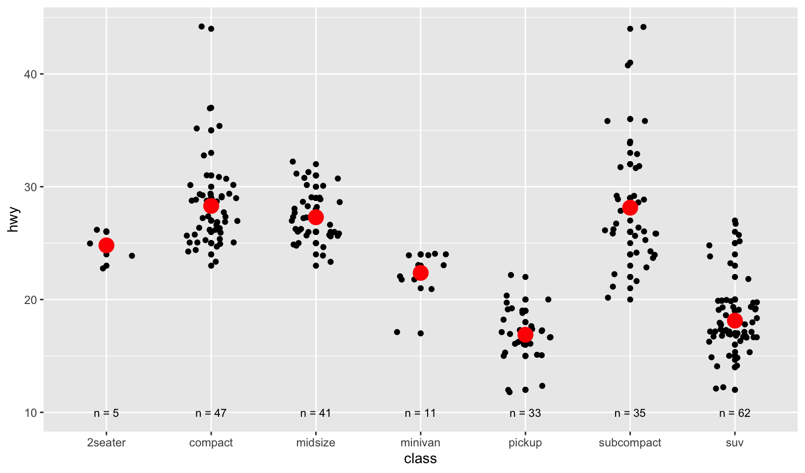
GG Solutions:
mpg %>%
ggplot(aes(class, hwy)) +
geom_jitter(width = 0.15, height = 0.35) +
geom_point(
data = class, aes(class, hwy),
color = "red",
size = 6
) +
geom_text(data = class, aes(y = 10, x = class, label = paste0("n = ", n)))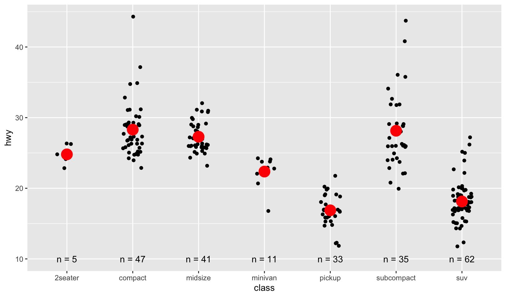
- I plotted 3 different layers: jittered points, red point for the summary measure, mean, and text for the sample size (n).
14.4.3 Exercises
- Simplify the following plot specifications:
ggplot(mpg) +
geom_point(aes(mpg$displ, mpg$hwy))
ggplot() +
geom_point(mapping = aes(y = hwy, x = cty), data = mpg) +
geom_smooth(data = mpg, mapping = aes(cty, hwy))
ggplot(diamonds, aes(carat, price)) +
geom_point(aes(log(brainwt), log(bodywt)), data = msleep)Answer:
ggplot(mpg, aes(displ, hwy)) +
geom_point()ggplot(mpg, aes(cty, hwy)) +
geom_point() +
geom_smooth(method = "loess", formula = y ~ x)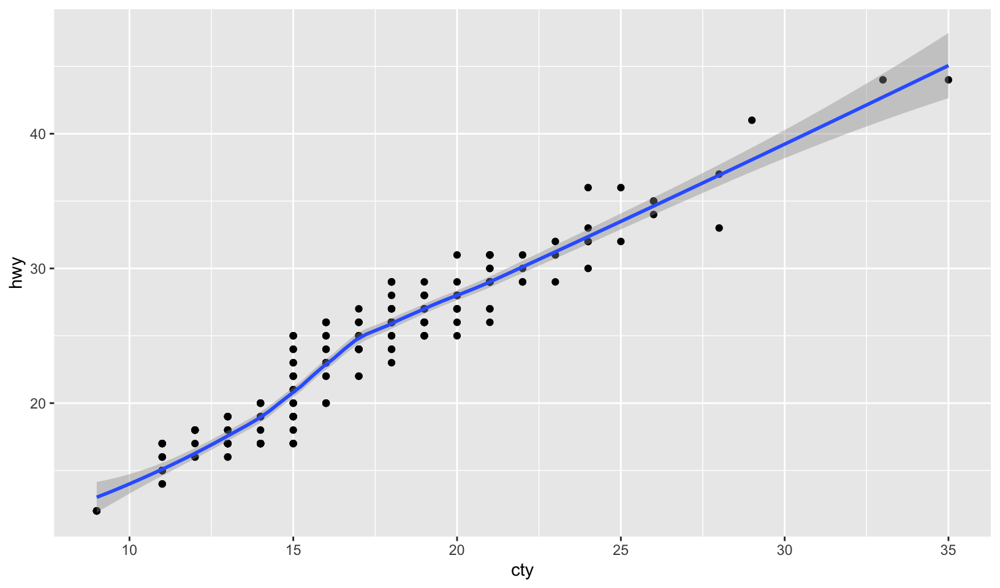
ggplot(msleep, aes(log(brainwt), log(bodywt))) +
geom_point(na.rm = TRUE)
GG Solutions offers a similar solution for the first two and a strange solution for the third (since the diamonds data is never used in the third plot):
ggplot(mpg) +
geom_point(aes(displ, hwy))
ggplot(mpg, aes(cty, hwy)) +
geom_point() +
geom_smooth()
msleep_processed <- msleep %>%
mutate(
brainwt_log = log(brainwt),
bodywt_log = log(bodywt)
)
ggplot(diamonds, aes(carat, price)) +
geom_point(aes(brainwt_log, bodywt_log),
data = msleep_processed
)Note: I prefer my answer to GG Solutions.
- What does the following code do? Does it work? Does it make sense? Why/why not?
ggplot(mpg) +
geom_point(aes(class, cty)) +
geom_boxplot(aes(trans, hwy))Answer: it does work, but does not make sense, and should be done as separate plots so that the variables comparisons are visible:
ggplot(mpg, aes(class, cty)) +
geom_point() +
coord_flip()ggplot(mpg, aes(trans, hwy)) +
geom_boxplot() +
coord_flip()GG Solutions:
- It plots points of
classvsctyand then a boxplot oftransvshwy. It doesn’t make sense to plot layers with differentxandyvariables.
- What happens if you try to use a continuous variable on the x axis in one layer, and a categorical variable in another layer? What happens if you do it in the opposite order?
Answer: let’s experiment!
This code throws an error, Error: Discrete value supplied to continuous scale
ggplot(mpg, aes(displ, hwy)) +
geom_point() +
geom_point(aes(drv, hwy), color = "red")Reversing the order works, but draws a strange plot:
ggplot(mpg, aes(displ, hwy)) +
geom_point(aes(drv, hwy), color = "red") +
geom_point()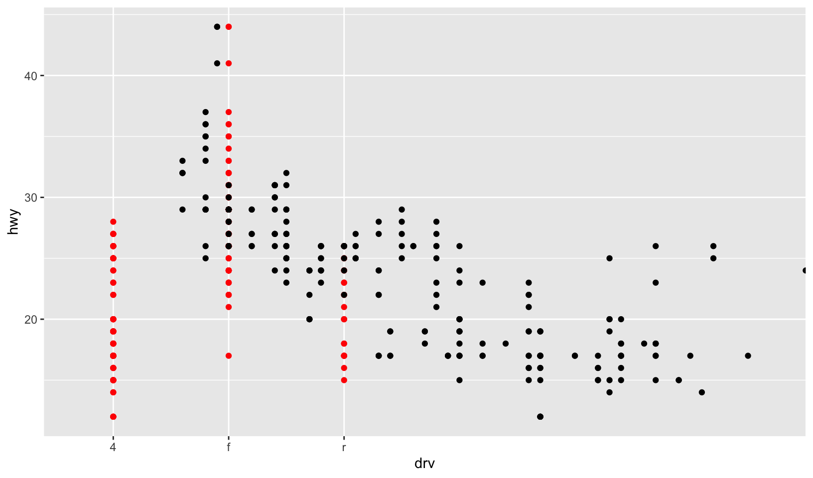
GG Solutions:
- Not sure
14.5.1 Exercises
- Download and print out the ggplot2 cheatsheet from rstudio so you have a handy visual reference for all the geoms.
Answer: cheatsheets have moved to posit (as the company rebranded).
- Look at the documentation for the graphical primitive geoms. Which aesthetics do they use? How can you summarise them in a compact form?
Answer: from 14.5, the primitives are:
geom_blank(): no aesthetics, “draw nothing”geom_point():x,y,alpha,color,fill,group,shape,size,stroke, “draw points”geom_path():x,y,alpha,color,group,linetype,linewidth, “connect observations”geom_ribbon():xory,yminorxmin,ymaxorxmax,alpha,color,fill,group,linetype,linewidth, “draw an area along a line”geom_segment():x,y,xend,yend,alpha,color,group,linetype,linewidth, “connect two points”geom_rect():x,y,alpha,color,fill,group,height,linetype,linewidth,width, “draw rectangles”geom_polygon():x,y,alpha,color,fill,group,linetype,linewidth,subgroup, “draw polygons”geom_text():x,y,label,alpha,angle,color,family,fontface,group,hjust,lineheight,size,vjust, “draw text”
- What’s the best way to master an unfamiliar geom? List three resources to help you get started.
Answer:
- R Documentation for ggplot2, either built-in or online
- Posit cheatsheets
- The R Graph Gallery
- For each of the plots below, identify the geom used to draw it.
Answer: in the order they appear in the Exercises:
geom_violingeom_point(actually usesgeom_count)geom_hexgeom_point(actually usesgeom_jitter)geom_areageom_path
Note: verifying my answers against the source code, I got two wrong, although the underlying geom is geom_point.
GG Solutions:
Starting from top left, clockwise direction:
geom_violin(),geom_point(),geom_point(),geom_path(),geom_area(),geom_hex().
Note: GG Solutions makes the same mistakes I did.
For each of the following problems, suggest a useful geom:
- Display how a variable has changed over time.
- Show the detailed distribution of a single variable.
- Focus attention on the overall trend in a large dataset.
- Draw a map.
- Label outlying points.
Answers below:
- Display how a variable has changed over time:
geom_line, with time on the x axis, orgeom_pathto show changes in two dimensions over time. - Show the detailed distribution of a single variable: one of the distribution plots,
geom_histogramandgeom_dotplotare good choices. - Focus attention on the overall trend in a large dataset:
geom_smooth. - Draw a map:
geom_mapor its successor,geom_sf. - Label outlying points:
geom_textorgeom_label.
14.6.2 Exercises
- The code below creates a similar dataset to
stat_smooth(). Use the appropriate geoms to mimic the defaultgeom_smooth()display.
mod <- loess(hwy ~ displ, data = mpg)
smoothed <- data.frame(displ = seq(1.6, 7, length.out = 50))
pred <- predict(mod, newdata = smoothed, se = TRUE)
smoothed$hwy <- pred$fit
smoothed$hwy_lwr <- pred$fit - 1.96 * pred$se.fit
smoothed$hwy_upr <- pred$fit + 1.96 * pred$se.fitAnswer: the exercise is to replicate geom_smooth using the smoothed data frame, which includes a line and a ribbon:
ggplot(mpg, aes(displ, hwy)) +
geom_point() +
geom_smooth(method = "loess", formula = y ~ x)ggplot(mpg, aes(displ, hwy)) +
geom_point() +
geom_line(data = smoothed, color = "blue", linewidth = 1) +
geom_ribbon(mapping = aes(ymin = hwy_lwr, ymax = hwy_upr), data = smoothed, alpha = 0.2)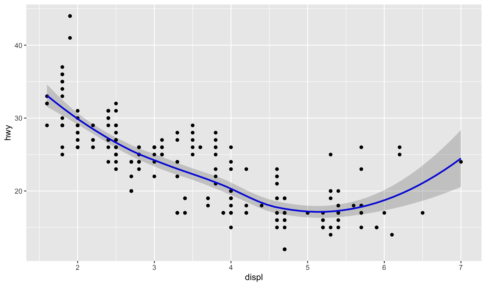
A perfect match!
GG Solutions:
smoothed %>%
ggplot(aes(displ, hwy)) +
geom_line(color = "dodgerblue1") +
geom_ribbon(aes(ymin = hwy_lwr, ymax = hwy_upr), alpha = 0.4)- What stats were used to create the following plots?
Answer: in the order they appear in the Exercises:
stat_ecdfstat_qqstat_density
Confirmed correct by reviewing the source code.
GG Solutions: From left to right,
stat_ecdf(), stat_qq(), stat_function()
- Read the help for
stat_sum()then usegeom_count()to create a plot that shows the proportion of cars that have each combination ofdrvandtrans.
Answer: in addition, facet by year.
ggplot(mpg, aes(drv, trans)) +
geom_count(aes(size = after_stat(prop), group = 1)) +
scale_size(labels = scales::label_percent()) +
facet_wrap(vars(year)) +
labs(title = "Combinations of drive train and transmissions", x = NULL, y = NULL) +
labs(size = "% of cars") +
theme_quo()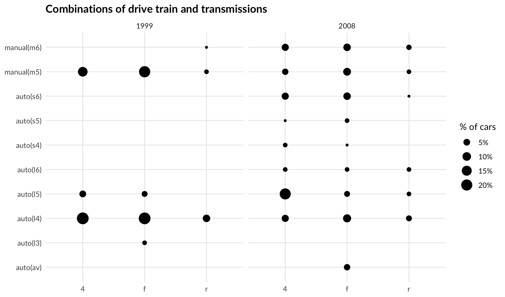
GG Solutions:
mpg %>%
ggplot(aes(drv, trans)) +
geom_count(aes(size = after_stat(prop), group = 1))14.7.1 Exercises
- When might you use
position_nudge()? Read the documentation.
Answer: as the documentation states, “Nudging is built in to geom_text() because it’s so useful for moving labels a small distance from what they’re labelling.”
GG Solutions: According to the help page, position_nudge() is generally useful for adjusting the position of items on discrete scales by a small amount. Nudging is built in to geom_text() because it’s so useful for moving labels a small distance from what they’re labelling.
- Many position adjustments can only be used with a few geoms. For example, you can’t stack boxplots or errors bars. Why not? What properties must a geom possess in order to be stackable? What properties must it possess to be dodgeable?
Answer: reading the docs, position_stack() requires that geoms have a position (points, lines, text) or a dimension (bar, area). Boxplots and error bars can’t be stacked since they don’t have a position or area. A geom must have a width in order to be dodgeable, which can be set with position_dodge(width = ...).
GG Solutions: Not sure
- Why might you use
geom_jitter()instead ofgeom_count()? What are the advantages and disadvantages of each technique?
Answer: geom_jitter() preserves the size and number of points but not position, and geom_count() preserves the position but not number or size. geom_jitter() can be a better choice when there are few overlapping points.
GG Solutions: geom_jitter() adds a small amount of random variation to the location of each point. It is useful for looking at all the overplotted points. On the other hand, geom_count() counts the number of overlapping observations at each location. It is useful for understanding the number of points in a location.
- When might you use a stacked area plot? What are the advantages and disadvantages compared to a line plot?
Answer: a stacked area plot is a good way to show the relationship of related variables, showing how parts of a whole change over time, for example, plotting the phases of incident response (mean time to detect, mean time to resolve). It is very similar to a line plot, and makes relative values (proportions) easier to compare and absolute values harder to compare.
GG Solutions: Stacked area plot seems useful when you want to portray an area whereas a line plot seems useful when you just need a line.
15 Scales and guides
The scales toolbox in Chapters 10 to 12 provides extensive guidance for how to work with scales, focusing on solving common data visualisation problems. The practical goals of the toolbox mean that topics are introduced when they are most relevant: for example, scale transformations are discussed in relation to continuous position scales (Section 10.1.7) because that is the most common situation in which you might want to transform a scale. However, because ggplot2 aims to provide a grammar of graphics, there is nothing preventing you from transforming other kinds of scales (see Section 15.6). This chapter aims to illustrate these concepts: I’ll discuss the theory underpinning scales and guides, and give examples showing how concepts that I’ve discussed specifically for position or colour scales also apply elsewhere.
Setting color with limits
Let’s create a pair of plots controlling color with limits (from 11.3.5)! First, we’ll just plot both independently:
gg_99 <- mpg |>
filter(year == 1999) |>
ggplot(aes(displ, hwy, color = fl)) +
geom_point()
gg_08 <- mpg |>
filter(year == 2008) |>
ggplot(aes(displ, hwy, color = fl)) +
geom_point()
gg_99
gg_08Now, let’s replot using limits:
gg_99 +
lims(x = c(1, 7), y = c(10, 45)) +
scale_color_discrete(
limits = c("c", "d", "e", "p", "r"),
breaks = c("d", "p", "r"),
labels = c("diesel", "premium", "regular")
)
gg_08 +
lims(x = c(1, 7), y = c(10, 45)) +
scale_color_discrete(
limits = c("c", "d", "e", "p", "r"),
labels = c("compressed", "diesel", "ethanol", "premium", "regular")
)
Key glyphs
Let’s use a key glyph! (draw_key_timeseries())
ggplot(economics, aes(date, psavert, color = "Personal\nSavings\nRate")) +
geom_line(key_glyph = "timeseries") +
labs(x = NULL, y = NULL, color = NULL) +
theme_quo()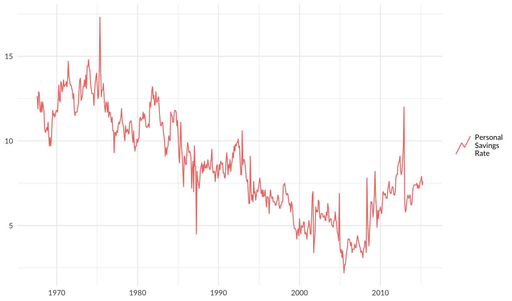
16 Coordinate systems
Coordinate systems have two main jobs:
Combine the two position aesthetics to produce a 2d position on the plot. The position aesthetics are called
xandy, but they might be better called position 1 and 2 because their meaning depends on the coordinate system used. For example, with the polar coordinate system they become angle and radius (or radius and angle), and with maps they become latitude and longitude.In coordination with the faceter, coordinate systems draw axes and panel backgrounds. While the scales control the values that appear on the axes, and how they map from data to position, it is the coordinate system which actually draws them. This is because their appearance depends on the coordinate system: an angle axis looks quite different than an x axis.
Polar coordinates
Let’s draw a spiral with polar coordinates!
data.frame(x = c(1, 200), y = c(200, 1)) |>
ggplot(aes(x, y)) +
geom_line() +
coord_polar()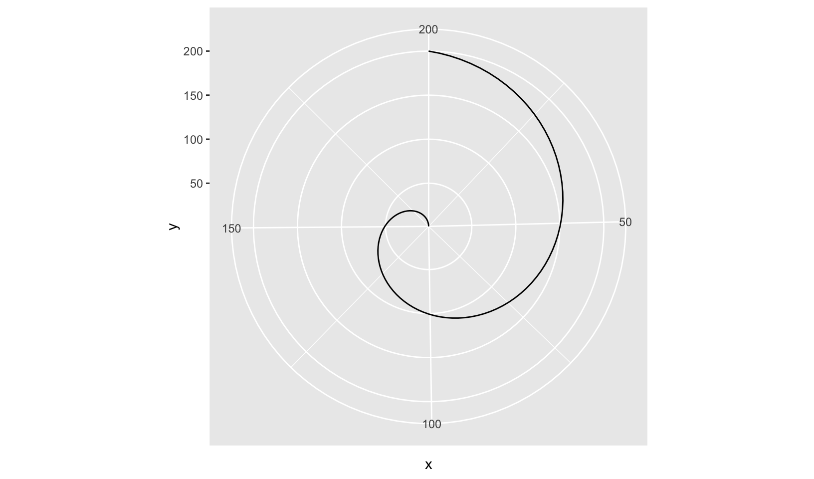
We can use polar coordinates to draw a pie chart:
ggplot(mtcars, aes(factor(1), fill = factor(cyl))) +
geom_bar(width = 1) +
scale_x_discrete(NULL, expand = c(0, 0)) +
scale_y_continuous(NULL, expand = c(0, 0)) +
coord_polar(theta = "y") +
labs(title = "Number of cylinders", fill = NULL) +
theme_void()17 Faceting
You first encountered faceting in Section 2.5. Faceting generates small multiples each showing a different subset of the data. Small multiples are a powerful tool for exploratory data analysis: you can rapidly compare patterns in different parts of the data and see whether they are the same or different. This section will discuss how you can fine-tune facets, particularly the way in which they interact with position scales.
Facet grid
Let’s draw a facet grid!
mpg |>
filter(cyl != 5) |>
ggplot(aes(displ, hwy)) +
geom_point() +
geom_smooth(method = "rlm", formula = y ~ x) +
facet_grid(drv ~ cyl) +
labs(x = NULL, y = NULL)Free scales
Free scales are useful when faceting across different variables over the same time period:
ggplot(economics_long, aes(date, value)) +
geom_line() +
facet_wrap(~variable, scales = "free_y", ncol = 1)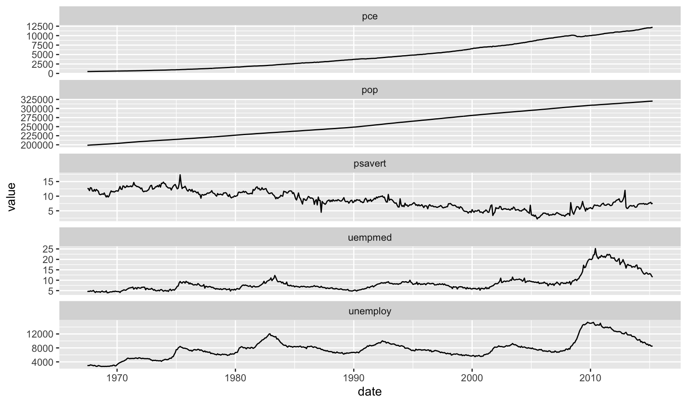
Facet space
facet_grid() has an additional parameter called space, which takes the same values as scales. When space is “free”, each column (or row) will have width (or height) proportional to the range of the scale for that column (or row). This makes the scaling equal across the whole plot: 1 cm on each panel maps to the same range of data. (This is somewhat analogous to the ‘sliced’ axis limits of lattice.) For example, if panel a had range 2 and panel b had range 4, one-third of the space would be given to a, and two-thirds to b. This is most useful for categorical scales, where we can assign space proportionally based on the number of levels in each facet, as illustrated below.
mpg2 <- subset(mpg, cyl != 5 & drv %in% c("4", "f") & class != "2seater")
mpg2$model <- reorder(mpg2$model, mpg2$cty)
mpg2$manufacturer <- reorder(mpg2$manufacturer, -mpg2$cty)
ggplot(mpg2, aes(cty, model)) +
geom_point() +
facet_grid(manufacturer ~ ., scales = "free", space = "free") +
labs(x = NULL, y = NULL) +
theme(strip.text.y = element_text(angle = 0))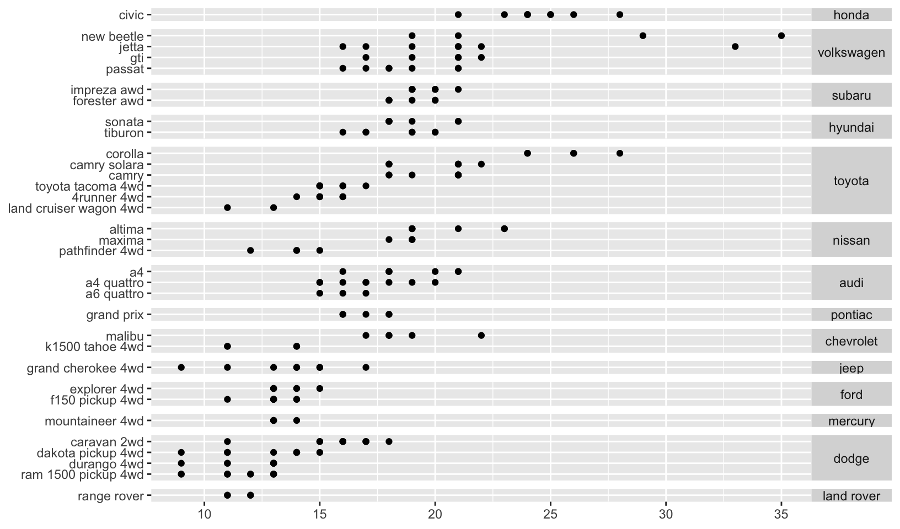
Grouping and faceting
Let’s combine grouping and faceting!
ggplot(mpg, aes(displ, hwy)) +
geom_point(data = select(mpg, -drv), color = "grey75") +
geom_point(aes(color = drv)) +
facet_wrap(~drv)17.7 Exercises
- Diamonds: display the distribution of price conditional on cut and carat. Try faceting by cut and grouping by carat. Try faceting by carat and grouping by cut. Which do you prefer?
Answer: faceting by caret requires discretizing, here we use cut_number():
ggplot(diamonds, aes(price, group = carat, color = carat)) +
geom_histogram(bins = 100) +
scale_color_viridis_c() +
facet_wrap(~cut)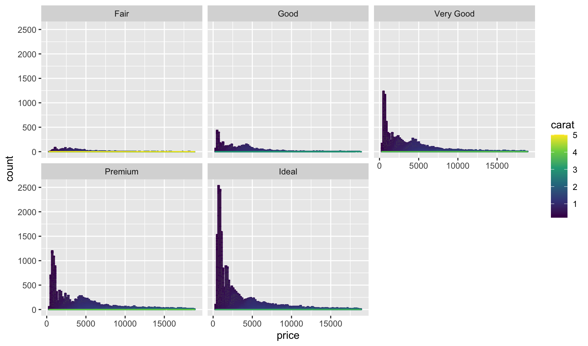
diamonds |>
mutate(carat_n = cut_number(carat, 6)) |>
ggplot(aes(price, group = cut, fill = cut)) +
geom_histogram(bins = 100) +
scale_color_viridis_d() +
facet_wrap(~carat_n)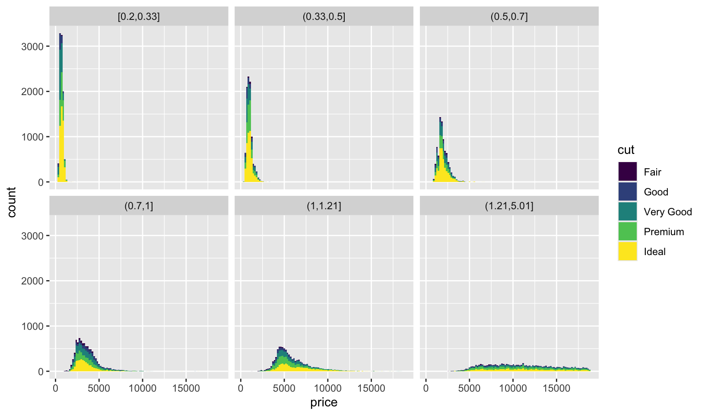
Faceting by cut seems preferable, since it provides an insight not provided by faceting by carat: there are more large carat diamonds with a Fair cut.
GG Solutions: takes a different approach, and concludes: “It makes more sense to facet by cut because its a discrete variable. Faceting by carat, a continuous variable, makes too many facets and renders the plot unreadable!”
- Diamonds: compare the relationship between price and carat for each colour. What makes it hard to compare the groups? Is grouping better or faceting? If you use faceting, what annotation might you add to make it easier to see the differences between panels?
Answer: comparing is hard because of overlap between groups and overplotting. Overall, grouping seems easier to read than faceting. Adding a reference line (in this case, a robust linear regression) makes it easier to see differences across faceting panels.
ggplot(diamonds, aes(carat, price)) +
geom_point(aes(color = color)) +
geom_smooth(method = "rlm", formula = y ~ x, se = FALSE) +
coord_cartesian(ylim = c(0, max(diamonds$price)))ggplot(diamonds, aes(carat, price)) +
geom_point(aes(color = color)) +
geom_smooth(data = select(diamonds, -color), method = "rlm", formula = y ~ x, se = FALSE) +
coord_cartesian(ylim = c(0, max(diamonds$price))) +
facet_wrap(~color)
GG Solutions:
diamonds %>%
ggplot(aes(carat, price)) +
geom_point(aes(color = color))diamonds %>%
ggplot(aes(carat, price)) +
geom_point(aes(color = color)) +
facet_wrap(~color)- I think its better to use grouping to compare the different colors. The panels all have the same shape, so it’s hard to compare the groups across facets. If I use faceting, I’d add that the plot is facetted by diamond colour, from D (best) to J (worst).
- Why is
facet_wrap()generally more useful thanfacet_grid()?
Answer: when faceting by a single variable, facet_wrap() is easier to use as it wraps the facets to fit the plot space automatically. facet_grid() is generally more useful only when faceting with two variables.
GG Solutions: I think facet_wrap() is more useful than facet_grid() because the former function is useful if you have a single variable with many levels and want to arrange the plots in a more space efficient manner. In data analysis, its extremely common to have a single variable with many levels that the analyst wants to arrange the for easy comparison. Although facet_grid() works on single variables, facet_wrap() involves less typing when you have a single variable.
- Recreate the following plot. It facets
mpg2by class, overlaying a smooth curve fit to the full dataset.
Answer: plot below.
ggplot(mpg2, aes(displ, hwy)) +
geom_point() +
geom_smooth(data = select(mpg2, -class), method = "loess", formula = y ~ x, se = FALSE) +
facet_wrap(~class)
Comparing to the source code, the answer is correct!
GG Solutions:
mpg2 %>%
ggplot(aes(displ, hwy)) +
geom_point() +
geom_smooth(data = mpg2 %>% select(-class), se = FALSE, method = "loess") +
facet_wrap(~class)#> `geom_smooth()` using formula = 'y ~ x'18 Themes
In this chapter you will learn how to use the ggplot2 theme system, which allows you to exercise fine control over the non-data elements of your plot. The theme system does not affect how the data is rendered by geoms, or how it is transformed by scales. Themes don’t change the perceptual properties of the plot, but they do help you make the plot aesthetically pleasing or match an existing style guide. Themes give you control over things like fonts, ticks, panel strips, and backgrounds.
This separation of control into data and non-data parts is quite different from base and lattice graphics. In base and lattice graphics, most functions take a large number of arguments that specify both data and non-data appearance, which makes the functions complicated and harder to learn. ggplot2 takes a different approach: when creating the plot you determine how the data is displayed, then after it has been created you can edit every detail of the rendering, using the theming system.
18.2.1 Exercises
- Try out all the themes in ggthemes. Which do you like the best?
Answer: the “interesting” themes are displayed below. From the top four, I’d pick theme_solarized_2(), although theme_fivethirtyeight() is a close runner-up.
base <- ggplot(mpg, aes(displ, hwy)) +
geom_point(aes(color = factor(cyl))) +
geom_smooth(method = "loess", formula = y ~ x) +
labs(
title = "Fuel economy declines as engine size increases",
subtitle = "1999-2008",
caption = "Data from https://fueleconomy.gov/",
x = "Displacement (liters)",
y = "Miles per gallon (highway)",
color = "Cylinders"
)
base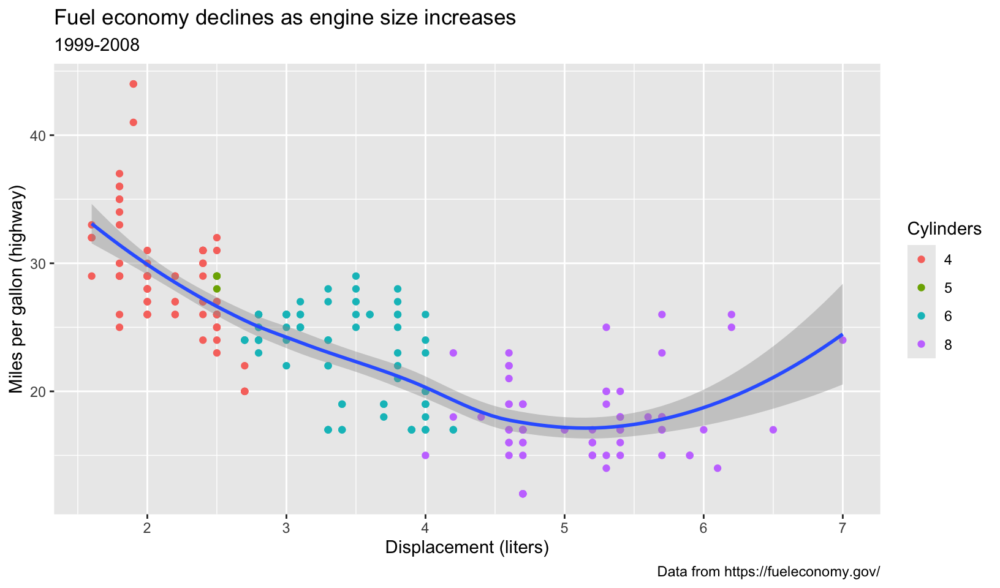
base + theme_calc()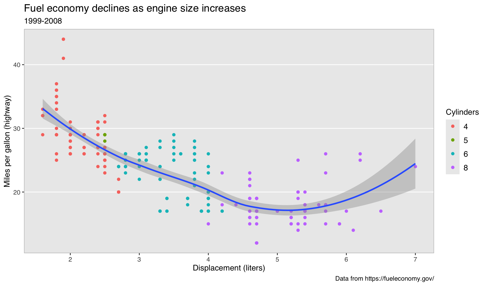
base + theme_fivethirtyeight()base + theme_hc()base + theme_solarized_2()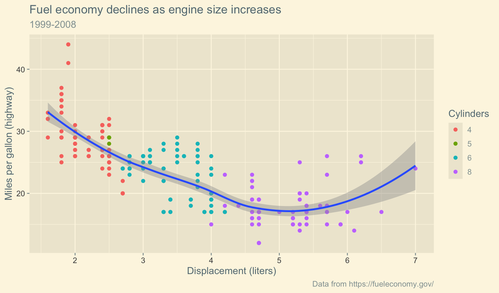
- What aspects of the default theme do you like? What don’t you like?
What would you change?
Answer: my personal theme, theme_quo() uses a white background with light gray gridlines (based on theme_minimal()), bold titles, captions left-adjusted, and a better font, Lato.
base +
theme_quo()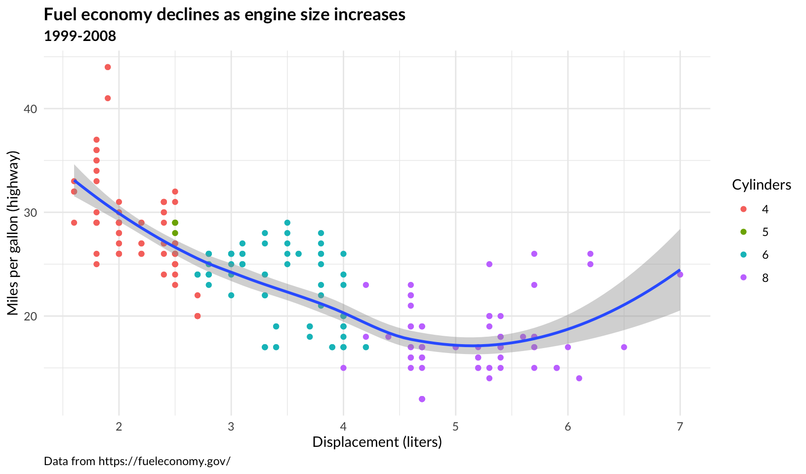
- Look at the plots in your favourite scientific journal. What theme do they most resemble? What are the main differences?
Answer: the plots from this paper on Safety Science most closely resemble theme_classic(), with few differences, the most notable being the position of the legend in Figures 4, 5, 8, and 9.
18.4.6 Exercises
- Create the ugliest plot possible! (Contributed by Andrew D. Steen, University of Tennessee - Knoxville)
Answer: using the same base, alter colors and theme settings, must still be legible:
base +
geom_smooth(method = "loess", formula = y ~ x, color = "orange", fill = "limegreen") +
theme_grey(base_family = "Comic Sans MS") +
theme(
plot.background = element_rect(fill = "skyblue", color = "purple"),
plot.title = element_text(face = "bold", hjust = 1, color = "red"),
plot.subtitle = element_text(color = "yellow"),
plot.caption = element_text(hjust = 0.5, color = "blue"),
plot.margin = margin(50, 50, 50, 50),
axis.line = element_line(color = "maroon", linetype = "dotdash"),
axis.text = element_text(color = "hotpink"),
axis.title = element_text(color = "green"),
legend.background = element_rect(fill = "lemonchiffon", color = "gray50"),
legend.key = element_rect(fill = "pink", color = "black"),
legend.text = element_text(color = "purple"),
legend.title = element_text(color = "deeppink"),
panel.background = element_rect(fill = "lavender"),
panel.grid = element_line(linetype = "twodash")
) +
scale_color_excel()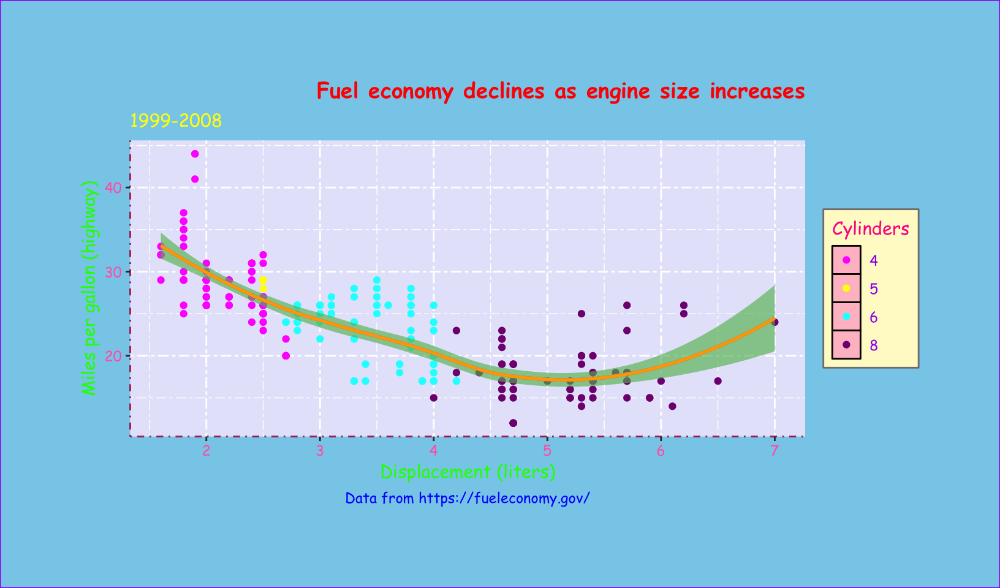
theme_dark()makes the inside of the plot dark, but not the outside. Change the plot background to black, and then update the text settings so you can still read the labels.
Answer:
base +
theme_dark() +
theme(
plot.background = element_rect(fill = "black"),
legend.background = element_rect(fill = "black"),
text = element_text(color = "gray50")
)- Make an elegant theme that uses “linen” as the background colour and a serif font for the text.
Answer:
base +
theme_minimal(base_family = "Georgia") +
theme(
plot.background = element_rect(fill = "linen"),
panel.grid.major = element_line(color = "gray85"),
panel.grid.minor = element_line(color = "gray90")
)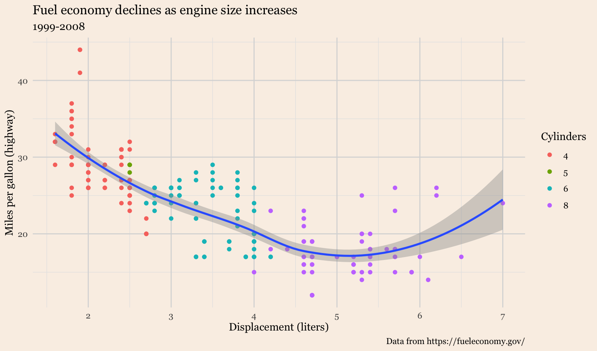
- Systematically explore the effects of
hjustwhen you have a multiline title. Why doesn’tvjustdo anything?
Answer: with multiline titles, hjust affects both lines in the same way, between left justified (0), centered (0.5), and right justified (1). vjust does slightly alter the vertical justification, but not significantly since two lines are just within the vertical margins.
multi <- base +
labs(title = "Fuel economy declines as engine size increases\n1999-2008", subtitle = NULL)
multi + theme(plot.title = element_text(hjust = 0))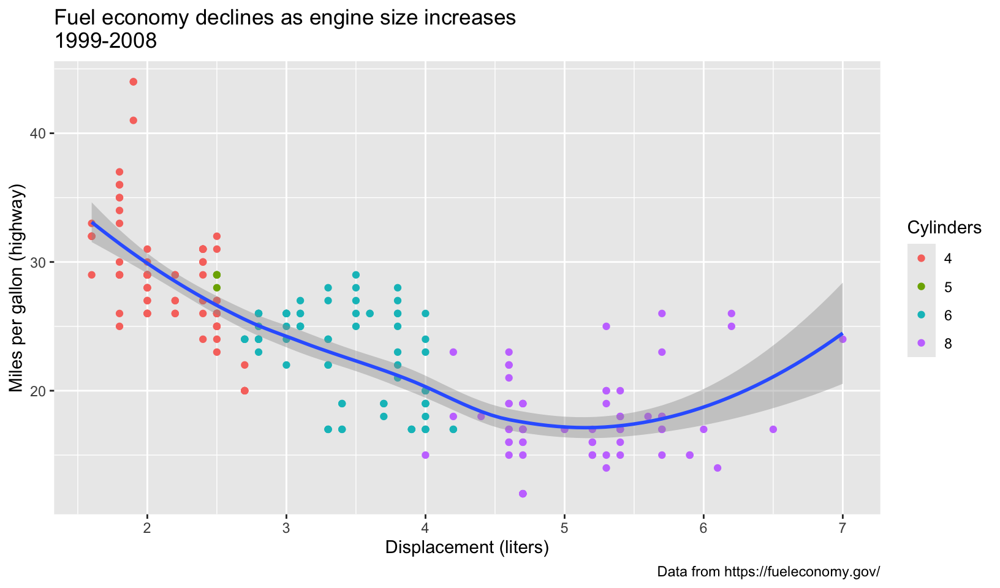
multi + theme(plot.title = element_text(hjust = 0.25))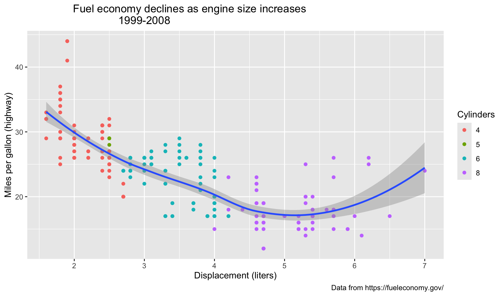
multi + theme(plot.title = element_text(hjust = 0.5))multi + theme(plot.title = element_text(hjust = 1))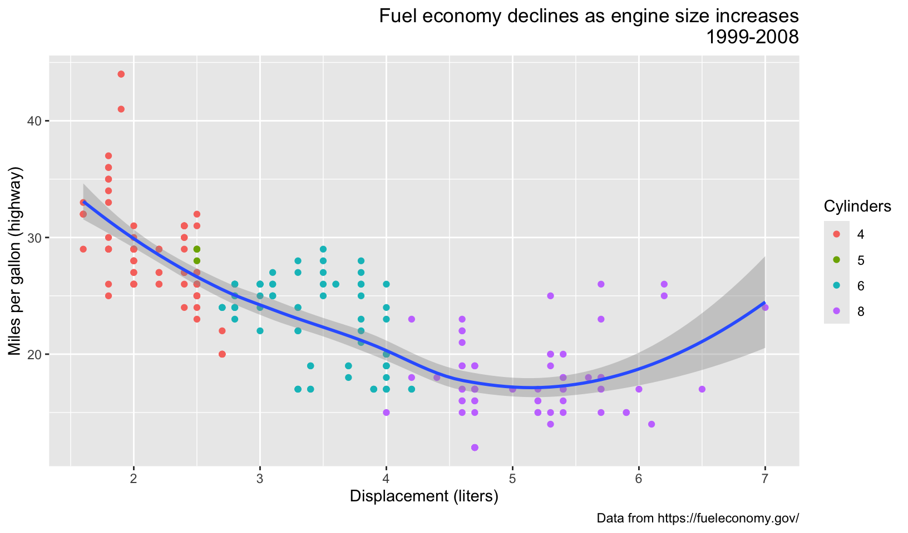
multi + theme(plot.title = element_text(hjust = 1, vjust = 0))